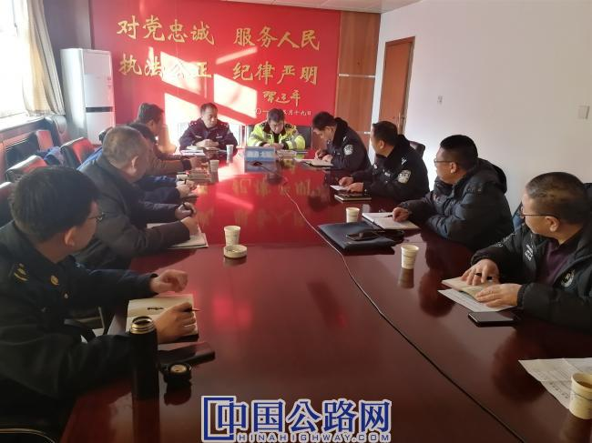

微官网
微官网

为深化完善石太高速交通事故处置联勤联动机制，12月30日，河北石太高速公路组织辖区内高速交警鹿泉大队、鹿泉区应急管理局、鹿泉区消防大队、高速路政石太支队五家单位相关人员参加的工作联席会。
会议就石太高速事故处置，重点针对危化品运输车辆事故处置程序、重大敏感信息发布等事宜进行了讨论和座谈，进一步细化了联动工作措施，明确了职责划分，建立了信息互通机制和重大信息联动上报机制，确保分工负责、保通有序、清障迅速、发布信息准确。一是由高速交警封路、带道、维持 现场秩序，确保救援车辆及时到达现场，展开救援；二是各部门明确专门联系人，确保24小时通讯畅通，遇有高速公路重特大交通事故等敏感信息时第一时间联系到人、分工负责、快速处置、保障道路畅通有序；三是明确高速交通事故各类别上报牵头部门，需会商的，统一意见后再上报及对外发布。